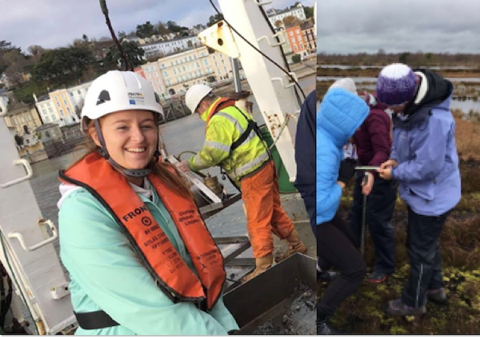

I am a research assistant at Maynooth University, working on the Línte na Farraige project. This is a Creative Ireland Climate Action funded project, which aims to communicate the risks of future sea level rise through a series of visual light installations across Irish coastal locations, and also showing that the future is still in our hands, that by reducing greenhouse gas emissions, we can stop the rate of sea level rise for future generations to come. Línte na Farraige is a collaborative project between scientists based at Trinity College Dublin, Maynooth University, A4 and University College Cork, Dublin CARO, Local Authorities, Irish creators, and artists Timo Aho and Pekka Niittyvirta.
I completed a BA in Geography & Music at Maynooth University in 2019, where I developed a keen interest in climatology and the environment. I decided to pursue this area of study and continued in Maynooth University to complete the MSc Climate Change in 2020. My MSc thesis, “How well do regional climate models reproduce the circulation indices?” was a data driven analysis, focusing on the European region, based on the use of ERA-Interim reanalysis data and EURO-CORDEX regional climate models.
